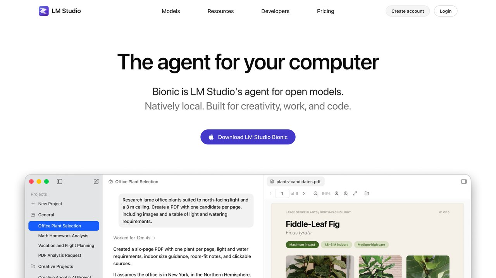

1. Instala Ollama (la vía más simple)
Ollama es una herramienta gratuita y de código abierto que convierte "instalar un modelo de IA" en un solo comando de terminal, sin configuración manual. Disponible para macOS, Windows y Linux.
# 1. Descarga Ollama desde ollama.com e instálalo (como cualquier programa normal) # 2. Abre una terminal y descarga tu primer modelo ollama pull llama3.2 # 3. Empieza a hablar con él, ya sin conexión a internet ollama run llama3.2 # Para salir de la conversación /bye
A partir de ahí, Ollama también expone una API local en tu propio ordenador (normalmente en localhost:11434) que puedes usar desde tus propios scripts o aplicaciones — sin coste por token, a diferencia de las APIs de pago, cuya tarifa desglosamos en cuánto cuesta usar la IA por API — — el mismo patrón de API que usarías con un proveedor en la nube, solo que apuntando a tu máquina en vez de a un servidor externo.
2. Qué modelo elegir según tu RAM
El factor que más determina qué modelo puedes correr no es tu procesador, es la memoria RAM disponible. Un modelo de pesos abiertos —que es lo que casi siempre quiere decir «de código abierto», y la diferencia la explicamos en modelos abiertos o cerrados— se mide en miles de millones de "parámetros" — cuantos más tiene, más capaz es, pero también más memoria necesita para cargarse.
| RAM disponible | Tamaño de modelo | Ejemplo |
|---|---|---|
| 8 GB | 3.000-4.000 M parámetros | llama3.2 (3B), gemma4:e2b |
| 16 GB | 7.000-8.000 M parámetros | gemma4:e4b o gemma4:12b, llama3.1 (8B) |
| 32 GB o más | 13.000-30.000 M parámetros | gemma4:26b, qwen3.6:27b, gpt-oss:20b |
Referencia orientativa, no exacta — el consumo real también depende del nivel de "cuantización" (compresión) del modelo que descargues.
3. Qué es la "cuantización" y por qué decide si tu modelo cabe
Cada parámetro de un modelo es, en el fondo, un número. La cuantización reduce la precisión con la que se guarda cada uno de esos números — de 16 bits a 8, a 4, incluso menos — para que el modelo ocupe menos espacio en memoria y cargue más rápido, a cambio de perder algo de calidad en las respuestas. Ollama descarga por defecto una versión ya cuantizada de cada modelo (normalmente en 4 bits), pensada para funcionar bien en hardware de consumo sin que tengas que configurar nada.
Ocupa menos RAM, responde más rápido, pero pierde precisión en tareas que exigen matices — puede notarse en textos largos o instrucciones complejas.
Más fiel al modelo original, pero necesita más RAM y responde más despacio — solo compensa si tu hardware tiene margen de sobra.
Para empezar, la versión por defecto que descarga ollama pull es la elección correcta en la mayoría de casos — solo merece la pena tocar el nivel de cuantización si notas que la calidad se queda corta para tu uso, o si tienes RAM de sobra y quieres exprimir algo más de precisión.
4. Los modelos abiertos más usados, uno junto a otro
| Modelo | Quién lo hace | Se nota bien en |
|---|---|---|
| Llama | Meta | Uso general, el más probado por la comunidad |
| Mistral | Mistral AI (Francia) | Buen equilibrio velocidad/calidad en tamaños pequeños |
| Gemma | Eficiencia en poca RAM | |
| Qwen | Alibaba | Código y razonamiento, buena relación tamaño/capacidad |
| gpt-oss | OpenAI | Razonamiento y uso de herramientas; la versión de 20B cabe en un ordenador con 16 GB |
| DeepSeek | DeepSeek | Razonamiento paso a paso en modelos de mayor tamaño |
No hay un "mejor" absoluto — todos mejoran con cada versión nueva, y la diferencia entre dos de tamaño similar suele notarse solo en tareas concretas. Si no sabes por dónde empezar, llama3.2 es una opción segura y ligera por ser muy documentada, y gemma4 es una alternativa más reciente que también acepta imágenes. La sección siguiente tiene las cifras de memoria actuales.
«IA local no es "una versión peor de ChatGPT". Es una herramienta distinta, para cuando lo que más te importa no es la capacidad máxima, sino que el dato no salga nunca de tu equipo.
— Redacción El Telar
Qué modelos puedes correr hoy y cuánto ocupan (octubre de 2026)
El catálogo de modelos abiertos se renueva cada pocas semanas, así que la tabla de la sección 2 es una orientación por tamaño, no una lista cerrada. Estas son cifras de descarga que publica la biblioteca de Ollama a 17 de octubre de 2026 (son del propio catálogo y pueden cambiar cuando salga una revisión):
| Modelo (etiqueta en Ollama) | Tamaño de descarga | Ventana de contexto | Entiende imágenes |
|---|---|---|---|
| llama3.2 (3B) | 2,0 GB | 128K | No |
| gemma4:e2b | 4,6 a 7,5 GB según variante | 128K | Sí |
| gemma4:e4b (por defecto) | 6,6 a 9,5 GB | 128K | Sí |
| gemma4:12b | 7,7 a 8,0 GB | 256K | Sí |
| gpt-oss:20b | 14 GB | 128K | No (solo texto) |
| gemma4:26b | 16 a 19 GB | 256K | Sí |
| qwen3.6:27b | 18 a 19 GB | 256K | Sí |
| gpt-oss:120b | 65 GB | 128K | No (solo texto) |
Una regla útil: el tamaño de descarga es un mínimo, no el consumo total. Además del modelo, la memoria tiene que albergar el contexto de la conversación y el sistema operativo. Por eso un modelo de 14 GB pide en la práctica un ordenador de 16 GB solo si cierras casi todo lo demás, y uno de 18 GB va más holgado con 32 GB.
Un matiz que a veces confunde: algunos modelos del catálogo de Ollama llevan la etiqueta cloud (por ejemplo gemma4:cloud). Esos no se ejecutan en tu ordenador, sino en la nube de Ollama, según su propia documentación, que también dice que no usa esos mensajes para entrenar modelos. Si tu motivo para usar IA local es la privacidad, evita esas etiquetas o desactiva las funciones en la nube.
Y no confundas «abierto» con «local». Hay modelos abiertos gigantes, como Muse Spark Open de Meta (816.000 millones de parámetros) o Beam de Reflection (501.000 millones), que se pueden descargar pero no caben en un portátil. Para tu equipo, mira las variantes pequeñas o medianas. Si lo que te preocupa es el coste de usar IA por API en vez de local, la comparativa está en cuánto cuesta usar la IA por API.
Para repasar qué es cada pieza (parámetros, contexto, cuantización) tienes el glosario de términos de IA.
5. LM Studio: la vía con interfaz gráfica
Si prefieres no tocar la terminal, LM Studio ofrece exactamente lo mismo que Ollama pero con una interfaz de ventanas: un buscador de modelos con indicadores visuales de qué tamaños encajan con tu hardware, un chat integrado, y un servidor local que puedes activar con un botón en vez de un comando. Es la opción más cómoda para quien viene del mundo de aplicaciones de escritorio normales y quiere evitar la línea de comandos por completo.

6. Para qué merece la pena de verdad
Contratos, historiales médicos, código propietario — cualquier cosa que no quieras que salga de tu red, sin depender de la política de privacidad de un tercero.
Si haces miles de consultas sencillas al mes (clasificar texto, resumir emails cortos), el coste cero por consulta compensa rápido frente a una API de pago.
Para depurar un fallo difícil o razonar sobre un problema con muchos pasos, un modelo frontera en la nube sigue rindiendo mejor por un margen real — no te frustres si el local se queda corto ahí.
Un modelo local no navega la web por defecto — si tu tarea depende de información muy reciente, necesitas conectarlo a herramientas externas, lo que añade complejidad y, de nuevo, conexión a internet.
7. Conectarlo a tus propios documentos, sin que salgan de tu equipo
Una vez tienes un modelo local funcionando, el siguiente paso natural es que responda preguntas sobre tus propios documentos — contratos, apuntes, informes — sin que ese contenido salga nunca de tu ordenador. La técnica se llama RAG (Retrieval-Augmented Generation) y consiste, en esencia, en indexar tus documentos en una base de datos local y hacer que el modelo consulte esa base antes de responder, en vez de depender solo de lo que aprendió durante su entrenamiento. Tanto LM Studio como varias herramientas complementarias de Ollama (AnythingLLM es la más sencilla de instalar) ofrecen esto con una interfaz de "arrastra tu carpeta de documentos" sin necesidad de programar nada. Si quieres entender cómo funciona por dentro antes de montarlo, nuestra guía de RAG explicado cubre el mecanismo completo, aplicable igual en la nube que en local.
8. La diferencia legal, no solo técnica, de que el dato no salga
Cuando envías un documento a un chat en la nube, ese contenido sale de tu equipo y pasa por los servidores de otra empresa, sujeto a su política de retención de datos — aunque no lo use para entrenar modelos, técnicamente ha "salido". Con un modelo local, ese problema desaparece por diseño: no hay ningún servidor externo al que enviar nada, porque todo el procesamiento ocurre en tu propia máquina. Para profesiones sujetas a secreto profesional (abogacía, medicina, asesoría fiscal) o para empresas con clientes que exigen contractualmente que sus datos no salgan de un perímetro concreto, esa diferencia no es un matiz técnico — puede ser la diferencia entre poder usar IA para un caso concreto o no poder usarla en absoluto.
9. Los problemas habituales y cómo resolverlos
Va muy lento, una palabra cada varios segundos
El modelo no cabe en la memoria rápida y el sistema está usando el disco. Prueba una versión más pequeña (menos parámetros) o más cuantizada, y cierra el navegador y otras aplicaciones pesadas mientras lo usas.
El ordenador se calienta y el ventilador no para
Es normal durante la generación: el procesador o la gráfica trabajan al máximo. En un portátil, úsalo enchufado y sobre una superficie dura.
Responde en inglés aunque le hable en español
Algunos modelos pequeños se entrenaron sobre todo en inglés. Pide explícitamente "responde siempre en español" o elige un modelo con buen soporte multilingüe.
Se inventa cosas con más facilidad que ChatGPT
Es esperable: un modelo que cabe en un portátil tiene mucha menos capacidad que los grandes modelos en la nube. Úsalo para tareas acotadas sobre texto que tú le das, no como enciclopedia.
No encuentra el modelo después de instalarlo
Comprueba el nombre exacto con el comando de listado de Ollama. Un error de una letra en la etiqueta del modelo es la causa más común.
10. Tres usos concretos donde lo local compensa
La pregunta útil no es si un modelo local es tan bueno como ChatGPT, porque no lo es. Es si para esta tarea basta, y si el hecho de que nada salga de tu equipo cambia algo.
Resumir documentos confidenciales
Actas de reuniones, informes internos o documentación de clientes. Un modelo mediano resume bien texto que tú le das, y no tienes que preguntarte qué condiciones de uso tiene un servicio externo.
Clasificar o etiquetar mucho texto
Cientos de correos, reseñas o tickets. En local no pagas por uso, así que puedes procesar grandes volúmenes sin vigilar la factura de una API.
Trabajar sin conexión
En un tren o en un sitio con mala cobertura, un modelo local sigue funcionando. Para redactar, reformular o traducir borradores es suficiente.
Resume el siguiente documento en: 1. Cinco puntos clave (máximo una línea cada uno). 2. Decisiones o acuerdos que aparecen. 3. Tareas pendientes con su responsable, si se menciona. Usa solo la información del documento. Si algo no está claro, escribe "no se indica". Documento: [pega aquí el texto]
11. Actualizar modelos y recuperar espacio en disco
Cada modelo ocupa varios gigas, y es fácil acabar con una docena descargados después de probar. Tanto Ollama como LM Studio permiten ver la lista de modelos instalados y borrar los que no uses; conviene revisarla de vez en cuando. Los modelos abiertos también se actualizan: las nuevas versiones suelen mejorar sin necesitar más memoria, así que merece la pena mirar si hay una revisión reciente del que usas.
Un consejo práctico: quédate con dos modelos, uno pequeño y rápido para tareas sencillas y otro más grande para cuando necesites más calidad. Tener diez no te aporta nada y te llena el disco.
Colibri: modelos gigantes en un ordenador normal
Colibri es un programa de código abierto que mueve modelos de IA enormes, de cientos de miles de millones de parámetros, en un ordenador sin tarjeta gráfica. El truco: estos modelos (llamados de «mezcla de expertos») solo usan una parte pequeña de sí mismos para cada palabra, así que Colibri guarda esa parte en la memoria y lee el resto del disco cuando hace falta.
Hoy funciona con modelos como GLM, Kimi, DeepSeek V4 Flash y Qwen 3.6, y también tiene un motor para generar imágenes.
Dónde conseguirlo: JustVugg/colibri · repositorio oficial ↗
En Windows:
Descarga el ZIP desde «Code → Download ZIP» y abre START-HERE.bat
En Mac (con Homebrew):
xcode-select --install
brew install libomp git python
git clone https://github.com/JustVugg/colibri
cd colibri && ./start-here.sh
Es gratis (Apache 2.0). Pide como mínimo 8 GB de RAM (mejor 16) y unos 22 GB libres en el disco para el modelo más pequeño. Ojo con las expectativas: al leer del disco va bastante más lento que Ollama con un modelo que cabe entero en memoria, así que para el día a día sigue siendo mejor la opción de Ollama que explicamos arriba. Colibri tiene sentido cuando quieres probar un modelo grande que no te cabría de ninguna otra forma.
Jan: un chat de IA en tu ordenador, sin internet
Jan es una aplicación gratuita y de código abierto (Apache 2.0) que se presenta como alternativa a ChatGPT funcionando en tu propio ordenador. Descargas modelos abiertos y chateas con ellos sin enviar nada a internet.
Cómo empezar
- Descarga Jan desde jan.ai o desde GitHub. Hay versión para Windows, macOS y Linux.
- En la sección de modelos, descarga uno abierto de Hugging Face (Llama, Gemma, Qwen, gpt-oss…). Empieza por uno pequeño si tu ordenador tiene poca memoria.
- Abre un chat nuevo y elige ese modelo. A partir de aquí funciona sin conexión.
- Opcional: crea asistentes con instrucciones fijas para tareas que repites.
Jan también puede conectarse a modelos en la nube (OpenAI, Anthropic, Mistral, Groq…) con tu propia clave, ofrece un servidor local compatible con la API de OpenAI y admite MCP.
Lo honesto: los modelos que caben en un ordenador doméstico son útiles para resumir, redactar o traducir, pero no igualan a los grandes modelos de pago. Ocupan varios gigas y necesitan RAM: en equipos modestos irán lentos.
Código: github.com/janhq/jan
Strata: un modelo grande en un PC de gaming
Si tienes un PC de gaming, puede servir para algo más que jugar. Strata es un proyecto gratuito y de código abierto (MIT) que ejecuta el modelo Qwen3.8-Flash-Next, que normalmente necesitaría un servidor, en un ordenador doméstico con Windows o Linux. Su instalador detecta tu tarjeta gráfica y prepara el resto.
Qué necesitas
- Tarjeta gráfica: NVIDIA GeForce RTX serie 20, 30, 40 o 50, o una AMD Radeon compatible (RX 7900, 7800, 9070 y otras), con 12 GB de VRAM o más.
- RAM: 32 GB o más; con 64 GB funcionan todas las versiones.
- Disco: unos 80 GB libres, mejor en SSD.
- Sistema: Windows 10/11 o Linux con el controlador gráfico actualizado.
Qué hace
Chatea, escribe código, lee imágenes y ofrece una API local compatible para conectar tus aplicaciones y agentes. Según las mediciones de sus autores en dos PCs de gaming, escribe entre 44 y 94 tokens por segundo según la versión del modelo, más rápido de lo que se lee.
Lo honesto: no es para portátiles sencillos, y en Mac solo hay un soporte experimental hecho por la comunidad. Las cifras de velocidad son del propio proyecto y varían con tu tarjeta. Aunque es potente, no iguala necesariamente a los mejores modelos de pago en todas las tareas.
Repositorio: github.com/Niko1221/Strata
AirLLM: modelos enormes en una tarjeta gráfica de 4 GB
Un modelo de 70.000 millones de parámetros no cabe entero en una tarjeta pequeña. AirLLM es una librería de código abierto (licencia Apache-2.0) que no lo carga entero: mantiene en la tarjeta una sola capa cada vez, así que la memoria que necesitas depende del tamaño de una capa y no del modelo completo. Su README dice que así se ejecutan modelos de 70B en una sola tarjeta de 4 GB, sin cuantizar, destilar ni recortar el modelo.
Cómo empezar
- Necesitas Python y una tarjeta gráfica compatible. Su README indica también soporte para macOS desde la versión 2.8.2.
- Instálala con
pip install airllm. - Sigue los ejemplos de su README para cargar un modelo y generar texto.
Qué esperar
- Corre en tu ordenador: no pagas por mensaje ni necesitas una API.
- Es más lento: lee las capas del disco en cada paso, así que tarda más que un modelo que cabe entero en la tarjeta.
- Necesitas mucho espacio libre en disco para guardar el modelo.
Lo honesto: no es magia: cambias memoria por velocidad. Para un uso diario, un modelo más pequeño que quepa entero suele ir mejor; lo tienes explicado en esta misma guía. Lo que cuenta su README no lo hemos probado en un equipo concreto.
Repositorio: github.com/lyogavin/airllm · Verificado el 19 de octubre de 2026 en el README del autor. Unas 39.000 estrellas en GitHub.